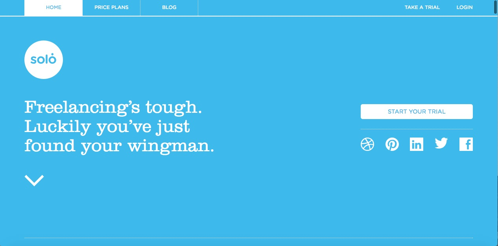

/Home/
Thrivesolo-critique
November 8th, 2016
thrivesolo.com is the website for a service for analysing and managing freelance projects. It has a simple, clean layout with plain color schemes. There are three different dual color combinations across the three major tabs in the website. The contrast in the color combination works well and has very good readability. The design of the website is such that it clearly directs the user and exhibits a clear sense of navigation. The user primarily has to just keep scrolling until the bottom of the page to read the entire content in the webpage. This way, the user doesn’t have click on adjacent links/ choose where to move to.
I am looking at three different breakpoints for this website: namely, desktop screen, iPad and iPhone. When viewed on the desktop screen, the website exhibits a clear sense of hierarchy. The navigation bar is always fixed at the top no matter how far the user scrolls down. There are bold illustrations with few lines of text placed adjacent to each other. This layout is successful because it doesn’t make the website look text heavy. And, the illustrations add visual interest to the page.
When viewed on an iPad screen the navigation bar at the header takes up two rows of space as opposed to one row when viewed on the website. The rest of the content layout is preserved. It works in this case because there’s just a big illustration and a small paragraph of text next to it. Basically, it is a two-column layout. Therefore, it makes it easy to preserve the layout when scaling down. The margin spacing between elements is all that is changed in order to scale it down to fit an iPad screen. I feel like this is smart because it doesn’t involve changing the layout much. It seems very logical to have a two-column layout in this case.
As for viewing the site on an iPhone screen, each element in the navigation tab takes up an entire two on its own and the elements are stacked one on top of each other. The content is organised in such a manner that the small paragraph precedes the illustration and everything is again, stacked one on top of each other. Again, this design is smart and feels right because it maintains the simplicity of the page while having a strong sense of hierarchy. On the whole, I feel like this design is amazing across multiple platforms mainly because of its simplicity.